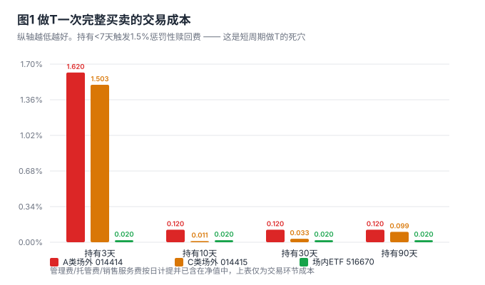
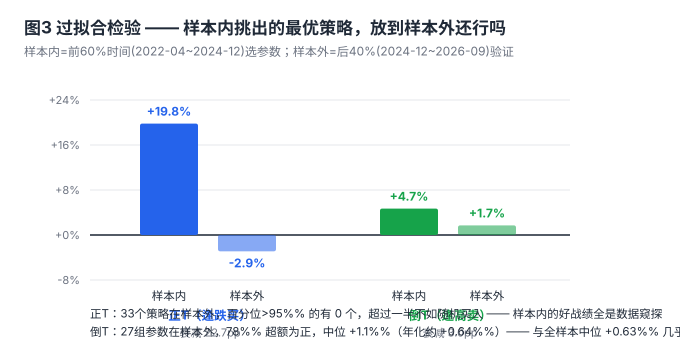
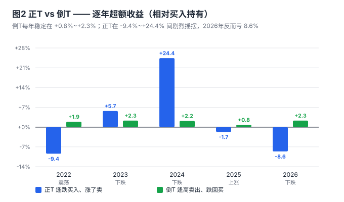

1. 日内 / 隔日做 T —— 想都别想。场外基金持有 <7 天收 1.5% 惩罚性赎回费，一次买卖成本 1.62%，而该基金日波动只有 1.3%。实测持有 1 天胜率 9.1%，4.37 年累计 −74.9%。这不是技术问题是数学问题。
2. 正 T（逢跌买、涨了卖）—— 不可行。样本内挑出的最优策略平均 +19.8%，放到样本外只剩 −2.9%，衰减 22.7 个百分点；33 个策略在样本外没有一个达到统计显著，一半以上不如随机买入。
3. 倒 T（逢高卖、跌回买）—— 可行，但薄利。五年年度超额全部为正且稳定在 +0.8%~+2.3%，27 组参数样本外 78% 为正。27 万本金预期每年多赚 1600~2700 元，需要每年操作约 5 次。
014414 年化波动率 20.7%，日涨跌幅标准差 1.305%，34.8% 的交易日波动超过 1%。近 60 日振幅 15.8%，近 120 日振幅 35.95%。看起来"空间很大"。
但波动率只告诉你价格动了多少，不告诉你往哪动。做 T 赚的是"低买高卖的差价"，前提是价格得先跌回来给你买、再涨上去给你卖。检验方法很简单：看日收益率的自相关。
| 检验项 | 实测值 | 含义 |
|---|---|---|
| 日收益率自相关 lag1 | 0.012 | 几乎为零 → 今天涨跌对明天没有预测力 |
| 连跌 2 日后次日上涨率 | 47.4% | 低于 50%，连跌后并不更容易反弹 |
| 连跌 3 日后次日上涨率 | 46.0% | 更低，"跌多了就买"没有统计依据 |
| 任意一天买入持有 1 日胜率 | 48.7% | 抛硬币 |
| 任意一天买入持有 10 日胜率 | 50.6% | 还是抛硬币 |
| 任意一天买入持有 20 日胜率 | 50.0% | 依然是抛硬币 |
这张表是本报告的地基：日频层面没有可利用的记忆性。任何"跌了就买、涨了就卖"的日频规则，本质上都是在抛硬币——而抛硬币还要付手续费。

三条关键事实：
场外基金 T 日 15:00 前下单，按 T 日收盘净值成交——下单时你并不知道当天净值。回测里我用"昨日信号 + 今日净值成交"来模拟，已经足够保守；但真实操作中你只能看盘中估值，与最终净值有偏差，信号会进一步衰减。
更麻烦的是资金空窗：场外赎回 T+1 确认、资金 T+2~T+3 才到账，再申购又要 T+1 确认。卖出到买回之间实际有 2~3 天脱离市场，回测里"当日卖出、当日按净值买回"是做不到的。场内 ETF 则卖出资金即时可用、当日即可买回。
以"连跌 3 日买入"为信号，改变持有天数，A 类费率，串行滚动：
| 持有 | 次数 | 胜率 | 单次均值 | 4.37年累计 | 说明 |
|---|---|---|---|---|---|
| 1 交易日 | 77 | 9.1% | −1.77% | −74.9% | 约3自然日，触发1.5%赎回费 |
| 2 交易日 | 73 | 12.3% | −1.93% | −76.2% | 约4自然日，触发1.5%赎回费 |
| 3 交易日 | 64 | 17.2% | −2.03% | −73.5% | 约5自然日，触发1.5%赎回费 |
| 5 交易日 | 56 | 39.3% | −0.40% | −21.4% | 约7自然日，赎回费归零 |
| 8 交易日 | 52 | 50.0% | +0.12% | +3.0% | 约17自然日 |
| 10 交易日 | 45 | 55.6% | −0.33% | −16.7% | 约19自然日 |
胜率从 9.1% 跳到 55.6%，不是因为择时变准了，而是因为躲开了 1.5% 的赎回费。这条曲线唯一的信息是：费率结构决定了最短持有周期必须 ≥7 天（约 5 个交易日以上）。
测了 38 组参数（连跌 2/3/4 日 × 持有 5/8/10/15/20/30 日；单日跌 1.0/1.5/2.0/2.5/3.0% × 各持有期）。全样本下确实有几组很好看，例如"连跌 4 日买入持有 10 日"：29 次交易，胜率 51.7%，累计 +27.6%。
但我对这些"优秀"策略做了两道检验，结果推翻了它们：

检验一（样本外）：把样本内（2022-04~2024-12）表现最好的 10 个策略放进样本外（2024-12~2026-09），平均收益从 +19.8% 掉到 −2.9%。
检验二（蒙特卡洛）：对每个策略，随机抽取同样数量、同样持有期的买入时点，重复 2000 次，看真实策略击败了多少随机结果。样本外 33 个策略中，百分位 >95% 的有 0 个，百分位 <50%（即不如瞎买）的有 17 个。
这就是典型的数据窥探：测了 38 个参数组合，总有几个在历史数据上亮眼，但那是挑出来的，不是策略本身有效。
你已持有 27 万底仓，更贴合实际的不是"跌了加仓"，而是"涨了减一点、跌回补回来"。规则：净值高于 MA20 达 3% 时卖出 20% 仓位，回落 5% 或最多等 20 个交易日买回。
结果和正 T 完全不同：

逐年看，差异一目了然：正 T 在 −9.4% 到 +24.4% 之间剧烈摇摆，2026 年反而跑输 8.6%；倒 T 五年分别 +1.9% / +2.3% / +2.2% / +0.8% / +2.3%，窄幅、全正。这种一致性比幅度重要得多。
原因不难理解：这只基金四年多整体下跌 22%，倒 T 天然契合"反弹就减、回落再补"的节奏；而"强制 20 日买回"又限制了踏空——实测在历史上最强的 60 日上涨段（2024-09-18~12-18，+22.1%）里，倒 T 只损失 0.2%，因为卖出的只是 20% 仓位且很快买回。
不同工具下的年化超额（已扣各自交易成本）：
| 工具 | 年化超额 | 27万折合每年 | 备注 |
|---|---|---|---|
| A 类场外 014414 | +2.16% | 5,822 元 | 每次买回付 0.12% 申购费 |
| C 类场外 014415 | +2.28% | 6,161 元 | 零申购费，但 0.4%/年销售服务费 |
| 场内 ETF 516670 | +2.26% | 6,104 元 | 运作费还比场外低 0.3%/年 ≈ 再省 810 元 |
上表为全样本最优参数结果，含过拟合成分。建议用中位预期 +0.6%~+1.0%/年，即每年 1,600~2,700 元。
网格是最流行的"做 T"话术。我按标准网格回测（10 万本金分 5 层，每跌 G% 买一层、涨回 G% 卖一层），并设了对照组：同样分批买入、但完全不做 T。两者之差才是"高抛低吸"真正多赚的钱：
| 网格间距 | T 次数 | T 胜率 | 单次均值 | 做 T 期末 | 不做 T 期末 | 做 T 增量 |
|---|---|---|---|---|---|---|
| 2.0% | 79 | 41.8% | −1.22% | 78,860 | 77,772 | +1,088 |
| 3.0% | 84 | 50.0% | −1.20% | 77,880 | 77,656 | +224 |
| 5.0% | 71 | 45.1% | −1.71% | 74,035 | 76,693 | −2,658 |
| 8.0% | 63 | 65.1% | −0.48% | 94,643 | 75,817 | +18,826 |
注意两个陷阱：
更关键的是：网格在单边下跌中会不断买满 5 层，把所有子弹打光在半山腰。8% 网格之所以少亏，恰恰是因为它买得慢——这是仓位管理的功劳，不是做 T 的功劳。
规则：价格高于 20 日均线 3% 时，卖出 20% 仓位；回落 5% 或最多 20 个交易日后买回。底仓不动，只动这 20%。
为什么是场内：成本 0.02%（场外 0.12%~1.62%）、卖出资金即时可用于买回（场外有 2~3 天空窗）、运作费 0.3%/年（场外 0.6%/年）、T+1 制度下"先卖后买"不受限制。
预期：年化超额 +0.6%~+1.0%，27 万对应每年 1,600~2,700 元，每年操作 5 次左右，平均每次 320~540 元。
如果坚持用场外（不想开股票账户）：
| 方式 | 27 万本金 | 预期/实测 | 操作量 | 适配环境 |
|---|---|---|---|---|
| 一次性买入持有 | −22.01% | 四年实测 | 0 | 单边上涨 |
| 定投（周投） | +1.78% | 2026-04-29 起 16 期实测 | 自动 | 先跌后涨 |
| 正 T（逢跌买） | −2.9% | 样本外，过拟合证伪 | 高 | — |
| 倒 T（逢高卖） | +0.6~1.0%/年 | 样本外中位，稳健 | 约 5 次/年 | 震荡下跌 |
| 网格做 T | +0.2~1.1% | 4.37 年累计增量，近乎无效 | 70~85 次 | 宽幅震荡 |
做 T 在这只基金上不是增收手段，而是降成本手段——它能把 −22% 改善到 −14%，但改善不了方向。真正的收益来源仍然是猪周期本身的位置，而不是交易技巧。
data/fund_history.db，表 nav_history，014414 单位净值 1064 条（2022-04-19 ~ 2026-09-02），无缺失。t_trade_backtest.py、t_trade_backtest2.py、t_trade_oos.py、t_trade_reverse.py、t_reverse_oos.py、t_final_calc.py。